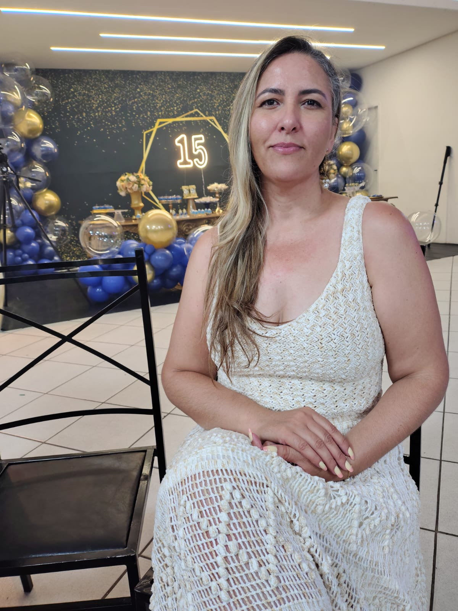
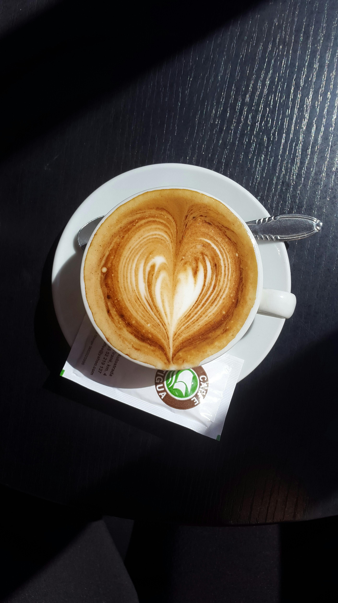

Um recado para minha guerreira vitoriosa

Cada momento que perdes comigo, cada brincadeira que faço contigo, cada rizada que compartilhas comigo, a cada "cada" eu me recordo de quão bom é ter você perto.
Neste dia tão maravilhoso eu quero homenagiar o meu porto seguro, que me carregou nos braços desde o dia que nasci até meus 24 anos. Eu reconheço o seu valor, e percebo que sou muito rica, pois tenho uma joia tão rara.
Mãe,
Te agradeço por todas os ensinamentos,
E as broncas,
A confiança,
Muitas risadas,
Os bons e maus momentos,
Pois tudo isso são puras demonstrações de amor.
Agradeço a Deus por me dar uma mãe tão incrível. Que sempre cuidou de mim, me deu a mão e me ensinou a caminhar para que um dia eu possa caminhar sozinha.
Obrigada por fazer parte da minha vida, obrigada por ser essa mãe maravilhosa.
Te amo mamãe!
Feito com muito amor e carinho ❤ ❤ ❤,
de sua filha, Emilli.
